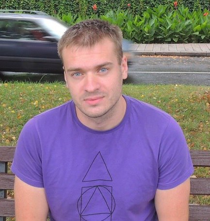

Contacts
- Email: peretsviach@gmail.com
- Phone: +48578179521
- Telegram: slawik2103
- Discord: Slawaper
- Address: Krakow, Poland
Perats Viachaslau
Epidemiologist - hygienist
About me
I am 26. I am a hygienist and epidemiologist by profession. Graduated from the university in 2019 in Belarus. I currently live in Poland. I am hardworking, responsible, communicative, smart student, focused, conscientious. I like to study and learn something new. I like to read books, do physical education, listen to music of different genres. I lead active and healhy lifestyle. I like to work and see the results of my work.
I want to gain skills in front-end development and further apply them in my work.
Skills
- HTML, basic
- CSS, basic
- VS Code, Git, basic
Code Example
From CodeWars
function multiply(a, b){
return a * b
}
Experience
- 3 months of work as a doctor in the medical institution "Pinsk Center for Hygiene and Epidemiology"
- I don't have experience in front-end development
Education
Languages
- Belarusian
- Russian
- English A1
- Deutsch A2